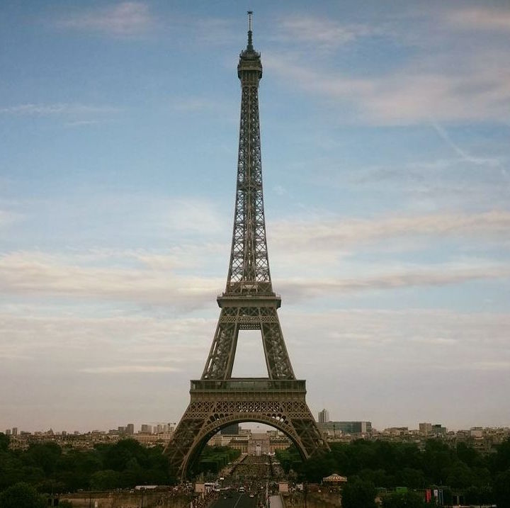

Charlotte Boucher
Student @Le Wagon
"Innovation distinguishes between a leader and a follower" (Steve Jobs)
My favourite cities:
|  |
ParisThe most romantic city in the world Often referred as the city of light. Make sure you don't miss out the following monuments: Eiffel Tower, Arc de Triomphe, Invalides, Panthéon, as well as the most famous museums: Louvre, Orsay, François Miterrand and Quai Branly. |
 |
Rio de JaneiroThe most stunning outdoor city in the world Often reffered as the Marvelous city. The must-see are the Christ, Sugar Loaf, Copacabana and Ipanema beaches, Botanical garden, Historical center and Santa Teresa neighborhood. My top restaurants are Aprazivel and Rubayiat. |
 |
San FranciscoThe most technology-oriented city in the world In spite of the Fog city reputation, its location by the bay is wonderful. Visiting Alcatraz and biking to Sausalito through the Golden Gate are my favourite activities. Make sure to chill in one of the many parks or brunch places in town. |